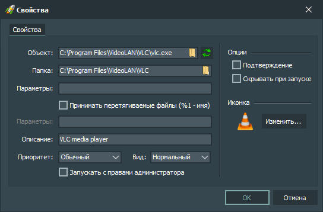

Элементы интерфейса:
-
Объект
Содержит путь к исполняемому файлу.
-
Папка
Содержит путь к рабочему каталогу исполняемого файла.
-
Параметры (первое поле)
Содержит параметры командной строки, используемые при запуске исполняемого файла.
-
Принимать перетягиваемые файлы
Позволяет обрабатывать перетянутые на кнопку файлы и передавать их исполняемому файлу.
-
Параметры (второе поле)
Содержит параметры командной строки, используемые при запуске исполняемого файл. Если включена опция "Принимать перетягиваемые файлы", имя файла будет передано в качестве первого параметра командной строки - для этого используется регулярное выражение "%1".
-
Описание
Содержит описание к исполняемому файлу. Это описание отображается в виде всплывающей подсказки при наведении курсора мыши на кнопку с исполняемым файлом, а также в строке состояния главного окна приложения.
-
Приоритет
Содержит значение приоритета, с которым исполняемый файл будет запускаться.
-
Вид
Содержит значение состояния окна, с которым исполняемый файл будет запускаться.
-
Запускать с правами Администратора
Запускать исполняемый файл с правами Администратора.
-
Подтверждение
Запрашивать подтверждение при запуске исполняемого файла.
-
Скрывать при запуске
Скрывать главное окно приложения после запуска исполняемого файла.
-
Кнопка «Изменить (иконку)»
Открывает диалог для изменения иконки для кнопки.
-
Кнопка «OK»
Применяет изменение настроек выбранной кнопки и закрывает окно настроек кнопки.
-
Кнопка «Отмена»
Отменяет применение изменений настроек выбранной кнопки и закрывает окно настроек кнопки.
Горячие клавиши:
-
Alt + F4
После нажатия этой комбинации клавиш окно с настройками кнопки закрывается без применения изменений.
-
Enter
После нажатия этой клавиши окно с настройками кнопки закрывается с применением изменений.
-
Esc
После нажатия этой клавиши окно с настройками кнопки закрывается без применения изменений.